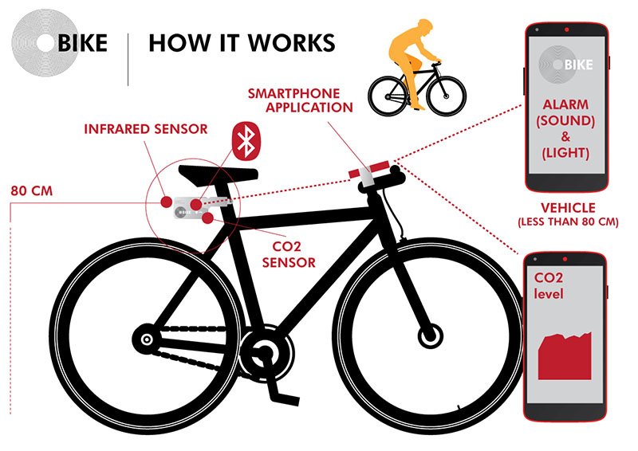

Final Project: IMPLEMENTATION
Implementation phase
Starting from the initial concept a lot of things i change now in my final project. A lot of things i learnt in these five months. For this reason, now I have refined and radically redesigned my idea. I think OBike is now a more (almost) feasible project. First of all, after the electronics design lessons I totally re-designed the case which contains all the electronics parts. Now the case is a compact box which contain two sensors and a Bluetooth module (infrared for measuring safety distance and a Co2 sensor). The case and bike mount will be 3D modeled and 3D printed. The second important thing is related to the basic version of a Obike mobile APP. I will use Python for interaction design and Kivy to create the Android Mobile Application. At this moment, the estimated cost to realize the first prototype of OBike is 50-60 euros. Finally a possible implementation of this project can be based on the concept of Smart Citizen Kit.

General concept

Components

Case
 Electronics
ElectronicsCase Studies
Copenaghen WheelLapka
Smart Citizen Kit
Twine
BOM (Work in progress)
Below an in progress list of materials to create Obike:- Lipo Battery 1000mAh 7.4V
- Module CO2 sensor MQ-135
- Infrared sensor Sharp GP2Y0A21
- BLE Bluetooth module HM10
- Module CO2 sensor MQ-135
- Transistor MOSFET ON Semiconductor 2N7002ET1G, canale N, SOT-23, 3 pin
- Low Dropout Voltage Regulator LP2985-33DBVT, 0.15A, 3,3 V, ±1.5%, 2,2 → 16 Vin, SOT-23, 5-Pin
- Low Dropout Voltage Regulator NCP1117ST50T3G, 2200mA, 5 V, ±1%, Massimo 20 Vin, SOT-223, 3-Pin
- Resistors
- Capacitors
Process and machine tools
Softwares
Tutorials
Gas Sensors tutorialGPS in Kivy
GPS in Kivy
A timer in Kivy